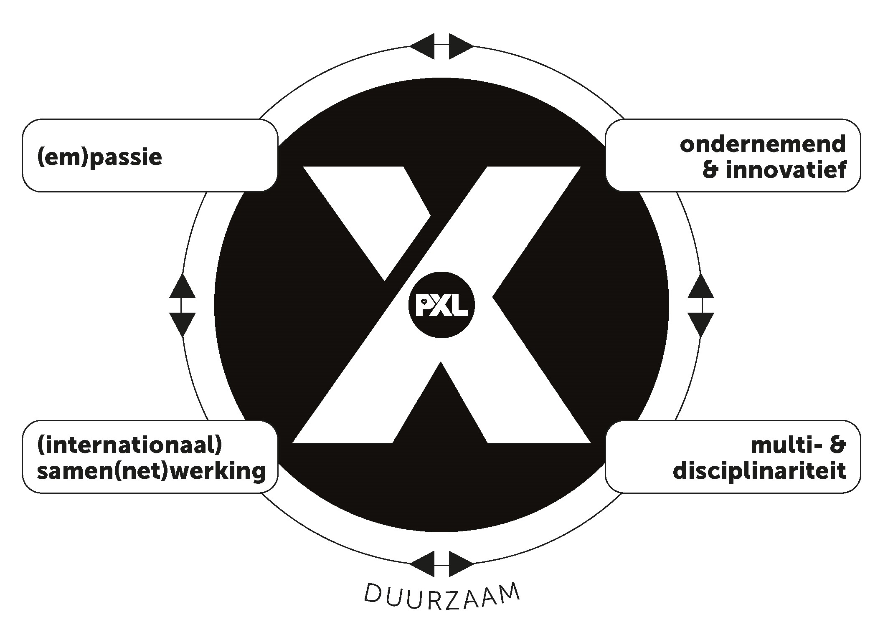

Reflectie
AIM-reflectie, kernkwadranten en X-factor
Werkplekleren 1 liep van september 2025 tot januari 2026, verspreid over 14 weken. In die periode maakte ik voor het eerst kennis met het volledige spectrum van een programmeur: van visueel programmeren in Scratch tot objectgeoriënteerd werken in C#, van versiebeheer via Git en GitHub tot webdevelopment in HTML en CSS, en van een WPF-applicatie met meerdere vensters tot een zelfgebouwd portfolio. Naast de technische vakken stond ook persoonlijke ontwikkeling centraal: via POP-sessies werkte ik aan plannen, reflecteren en mijn eigen carrièreperspectief. In deze AIM-reflectie blik ik terug op die periode.
| Onderdeel | Antwoord |
|---|---|

|
Wat vond je een bijzonder positief element van Werkplekleren 1?Het meest positieve aan Werkplekleren 1 was de directe koppeling tussen leren en iets maken. In tegenstelling tot vakken waarbij ik theorie bestudeer en die toets op een examen, bouwde ik hier telkens aan iets wat daarna ook werkte. Ik heb een ballonspel in Scratch gebouwd met meerdere levels, een consoleapplicatie en een WPF-toepassing in C#, SQL-queries voor databankbeheer, versiebeheer via Git en GitHub, en dit portfolio volledig zelf in HTML en CSS, zonder template of externe bibliotheek. Bijzonder waardevol waren ook de feedbackmomenten. Na het indienen van mijn C#-applicatie en de debugging-opdracht kreeg ik concrete opmerkingen over mijn code: wat goed was, wat beter kon. Die opmerkingen heb ik verwerkt en daarna zag ik het verschil in mijn aanpak. Dat iteratieve patroon van bouwen, feedback verwerken en verbeteren is precies hoe het in de professionele praktijk werkt, en het motiveert mij meer dan leren voor een punt. |

|
Wat vond je een minder leuk element van Werkplekleren 1?Werkplekleren 1 was voor mij overwegend positief. Toch waren er momenten waarop ik mij onzeker voelde over wat er precies van mij verwacht werd. Soms waren de richtlijnen voor een opdracht voor mij niet onmiddellijk helder, waardoor ik te lang in de verkeerde richting werkte en daarna moest bijsturen. Dat kostte mij tijd en energie die ik liever direct goed had besteed. Een tweede punt was het grotendeels individuele karakter van de leerervaring. Ik werk graag zelfstandig, maar miste soms de dynamiek van samen een probleem aanpakken. In een echte IT-omgeving werk je bijna altijd in team. Dat besef heeft mij gemotiveerd om in WPL2 actiever in teamverband mee te werken en mijn communicatievaardigheden concreet te oefenen. |

|
Welke nieuwe inzichten neem je mee uit Werkplekleren 1?Drie inzichten zijn mij bijgebleven. Ten eerste: het verschil tussen iets conceptueel begrijpen en het effectief kunnen implementeren is groter dan ik dacht. Ik kon uitleggen wat encapsulatie betekende, maar het correct toepassen in een meerlagige C#-applicatie vroeg extra oefening en fouten maken. Ten tweede: fouten zijn geen signaal van mislukking maar van leren. De debugging-opdracht was voor mij het meest leerzame moment van het semester, niet omdat ik het makkelijk vond, maar juist omdat ik fouten moest analyseren in code die ik zelf niet had geschreven. Daardoor begreep ik mijn eigen codegewoonten beter. Ten derde: planning loont. Bij opdrachten waarbij ik eerst een aanpak bepaalde voor ik begon te coderen, werkte ik sneller en met minder stress dan wanneer ik meteen in de code dook. Dit inzicht neem ik bewust mee: eerst nadenken, dan bouwen. |
Wat zou je een persoonlijk succes noemen tijdens Werkplekleren 1? Waarop ben je trots?Mijn grootste persoonlijk succes is dit portfolio. Ik heb het volledig zelf ontworpen en geprogrammeerd in HTML, CSS en JavaScript, zonder template, zonder framework en zonder externe bibliotheek. Van de eerste schets tot het eindresultaat, inclusief sticky navigatie, kaartensysteem, hover-effecten, responsive lay-out en een zelfgeschreven animatielaag met een particle canvas en scroll reveal, heb ik alles zelf gebouwd. Dat ik iets heb neergezet dat er professioneel uitziet én volledig door mij is gemaakt, geeft mij een grote voldoening. Een tweede succes is mijn Scratch-ballonspel. Ik heb niet alleen de basisopdracht voltooid maar bewust extra features toegevoegd: meerdere levels met toenemende moeilijkheidsgraad en een puntensysteem dat de voortgang bijhoudt. Dat was niet verplicht. Ik deed het omdat ik het uitdagend vond en omdat ik wilde zien of ik de logica volledig begreep. Dat initiatief nemen en verder gaan dan de minimumvereisten, is iets wat ik in elk volgend project wil herhalen. |
Kernkwadranten
De kernkwadrantentheorie van Daniel Ofman beschrijft hoe een kernkwaliteit, wanneer overdreven, een valkuil wordt. De uitdaging is de positieve tegenhanger van de valkuil: de kwaliteit die je nodig hebt om in balans te blijven. Wanneer de uitdaging op haar beurt overdreven wordt, ontstaat de allergie: wat je irriteert in anderen. Kernkwaliteit en allergie staan dus niet rechtstreeks tegenover elkaar; ze hangen via de valkuil en de uitdaging met elkaar samen.
Mijn kernkwaliteit is zelfstandigheid, gecombineerd met probleemoplossend denken en doorzettingsvermogen. Wanneer ik een probleem tegenkom, analyseer ik het systematisch en zoek ik net zo lang totdat ik de oorzaak begrijp. Ik wacht niet op iemand anders om het op te lossen en ik geef niet snel op.
Dat heeft zich doorheen Werkplekleren 1 meerdere keren getoond. Bij de debugging-opdracht in C# heb ik fouten in onbekende code opgespoord door systematisch breakpoints te plaatsen en elke variabele te controleren op het moment dat het misging. Ik had sneller iemand kunnen vragen, maar in plaats daarvan heb ik de code stap voor stap doorlopen totdat ik het zelf begreep. Bij mijn Scratch-ballonspel bleef ik de botsingsdetectie aanpassen en testen totdat ze betrouwbaar werkte, ook als ik het makkelijker had kunnen afhandelen. En bij dit portfolio heb ik elk CSS-probleem dat ik tegenkwam opgespoord en opgelost in plaats van er met een workaround omheen te werken.
Mijn valkuil is dat mijn zelfstandigheid en doorzettingsvermogen kunnen doorslaan naar koppigheid. Ik besteed soms te veel tijd aan het zelf uitzoeken van iets, terwijl een korte vraag aan een teamlid of docent mij die tijd had kunnen besparen. Ik heb de neiging om het gevoel te hebben dat ik iets "zelf zou moeten kunnen oplossen", en stel hulp vragen daardoor onnodig lang uit.
Concreet: tijdens de debugging-opdracht verloor ik bijna een uur aan het zoeken naar een fout die te maken had met een concept dat ik nog niet volledig begreep. Een gerichte vraag aan de docent had me dat uur kunnen besparen. In het WPL2-team heb ik een soortgelijk patroon herkend: ik werkte soms te lang aan een integratieprobleem tussen de frontend en de backend voor ik het aan een teamlid signaleerde. Dat heeft mijn voortgang vertraagd en het team ook.
Mijn allergie is passiviteit en afhankelijkheid. Wanneer ik zie dat iemand een probleem aanpakt door te wachten op een oplossing in plaats van zelf te analyseren, of snel opgeeft bij de eerste tegenslag, kost dat mij geduld. Ik snap dat niet iedereen op dezelfde manier werkt, maar het triggert mij wanneer de inspanning van zelf denken te gemakkelijk wordt vermeden.
Die allergie hangt logisch samen met mijn kernkwadrant: wat mij irriteert in anderen is het te ver doorschieten van wat voor mij een uitdaging is. Mijn uitdaging is communicatief samenwerken en op tijd hulp vragen. Het teveel van die uitdaging is altijd op anderen leunen en zelf niets uitzoeken. En dat kan ik moeilijk verdragen.
Mijn uitdaging is communicatie: tijdig melden hoe ik sta in een project, eerder hulp vragen wanneer ik vaststel dat ik lang op dezelfde plek trad, en proactief rapporteren aan teamleden ook als er geen probleem is.
In een professionele IT-context is dat een fundamentele vaardigheid. Teamleden kunnen hun planning niet afstemmen op mijn voortgang als ze die niet kennen. De combinatie van mijn zelfstandigheid en mijn drempel om hulp te vragen is op zijn best efficiënt, maar op zijn slechtst een bottleneck voor het team.
Concreet werk ik hieraan door tijdens teamsprint-overleggen actiever bij te dragen aan de voortgangsbespreking, en door sneller de vraag te stellen: "Heb ik hier langer dan dertig minuten aan gezeten zonder vooruitgang?" Als het antwoord ja is, is dat het signaal om hulp te zoeken.
X-factor
(Em)passie
Ik ben met volle goesting aan elk project begonnen: van mijn eerste Scratch-ballonspel tot dit portfolio. Ik voegde extra features toe aan mijn Scratch-spel (levels en een puntensysteem) niet omdat het gevraagd werd, maar omdat ik het uitdagend en leuk vond. Datzelfde enthousiasme zie ik in hoe ik dit portfolio heb gebouwd: ik heb het meerdere keren herwerkt totdat het resultaat was zoals ik het voor ogen had. Die intrinsieke motivatie, het willen maken van iets waar ik trots op ben, drijft mij aan als programmeur.
Ondernemend & innovatief
Ik gebruik Git en GitHub voor al mijn projecten, ook wanneer het niet verplicht is. Ik experimenteerde met CSS-animaties, hover-effecten en een kaartensysteem in mijn portfolio, en zocht actief naar betere manieren om mijn code te structureren. Bij elke opdracht vroeg ik mij af: kan dit beter, uitgebreider of eleganter? Dat initiatief nemen en verder denken dan de minimumvereisten is iets wat mij als beginnend programmeur onderscheidt.
(Internationaal) samenwerken
Via GitHub leerde ik hoe samenwerking in de IT-praktijk verloopt: code delen, versies bijhouden en de bijdragen van anderen volgen. De gastspreker-sessies gaven mij inzicht in het echte leven van een programmeur en de internationale dimensie van software: open source, Engelstalige documentatie en wereldwijde tools. Bij het Carrièrekompas analyseerde ik vacatures en koppelde ik mijn competenties aan wat werkgevers vragen. Feedbackmomenten leerden mij ook hoe je constructief reageert op kritiek en die omzet in concrete verbeteringen.
Multi- & disciplinair samenwerken
Ik werkte dit semester met een brede waaier aan technologieën: Scratch, C#, HTML, CSS, SQL, Git en Visual Studio. Dat toont hoe ik verschillende disciplines combineer en snel schakel tussen omgevingen. Bij debugging gebruikte ik tools als breakpoints en de call stack, wat aantoont dat ik gereedschappen strategisch inzet. Mijn reflecties en planning tonen ook de ontwikkeling van mijn soft skills: time management, zelfanalyse en communicatie. De SDG-opdracht liet mij nadenken over de maatschappelijke verantwoordelijkheid van technologen.
